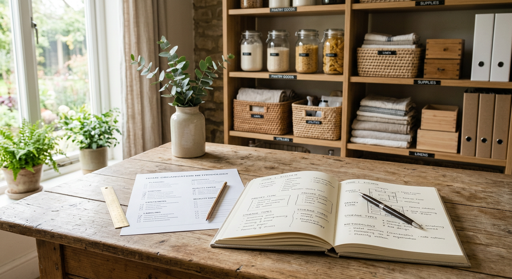

Best Closet Organizers for Small Spaces
Disclosure: As an Amazon Associate, we may earn from qualifying purchases.
Real products, quick tradeoffs, and best-for use cases.

Quick picks (real products)
- Best Over-Door: Simple Houseware 24 Pockets Over the Door Hanging Shoe Organizer — Check on Amazon
- Best Hanging Shelves: Whitmor 6 Section Hanging Shelf Closet Organizer — Check on Amazon
- Best Cube System: SONGMICS Cube Storage Organizer (DIY modular) — Check on Amazon
Comparison table
| Product | Best for | Pros | Tradeoffs |
|---|---|---|---|
| Simple Houseware 24-Pocket Over-Door | Renters / zero floor space | Fast setup, high vertical efficiency | Limited for bulky items |
| Whitmor 6-Section Hanging Shelf | Folded clothes and sweaters | Great visibility, no assembly | Can sag if overloaded |
| SONGMICS Cube Storage | Mixed storage (boxes + décor) | Flexible modular layout | Takes floor space and setup time |
Who should buy what?
- Small rental room: Simple Houseware over-door first.
- Need folded-clothing control: Whitmor hanging shelf first.
- Need flexible long-term setup: SONGMICS cube system.
Also read: Over-door vs cube shelves · Best picks under $25

FAQ
How do you choose these picks?
We prioritize use-case fit, organization impact, and practical setup tradeoffs.
Do prices stay the same?
Amazon prices and availability change often; verify on Amazon before buying.
What should I measure before buying a closet organizer?
Measure door clearance, shelf depth, vertical hanging length, and available floor footprint if using cubes.
Which organizer type is best for renters?
Over-door and hanging shelf systems are usually best because they need little or no permanent installation.
How many products should I buy to start?
Start with one organizer type per problem area. Overbuying too early usually creates new clutter.